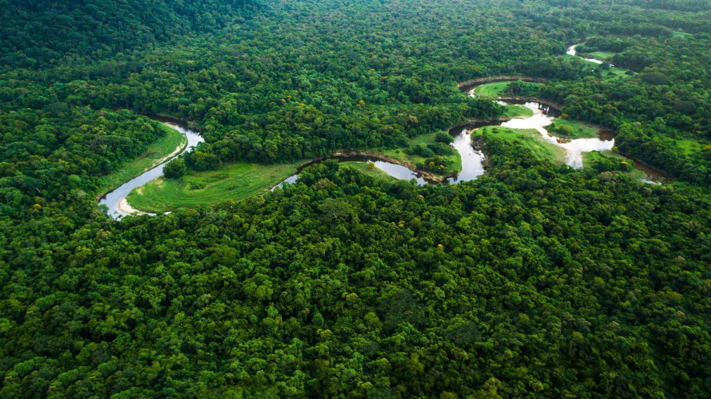
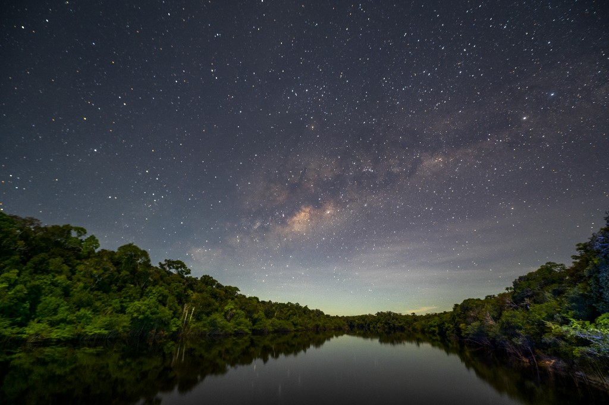
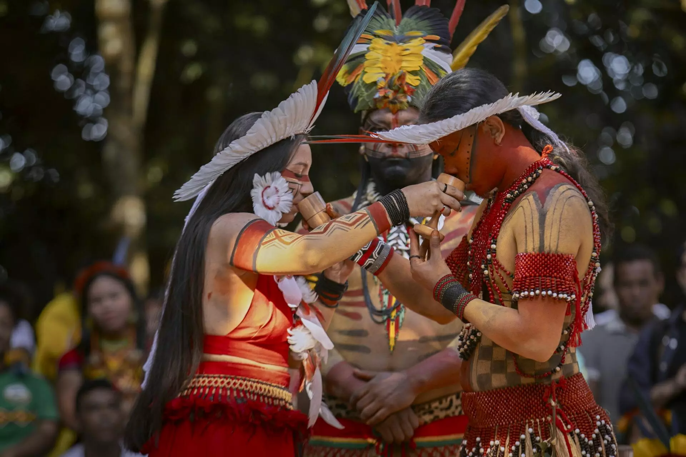
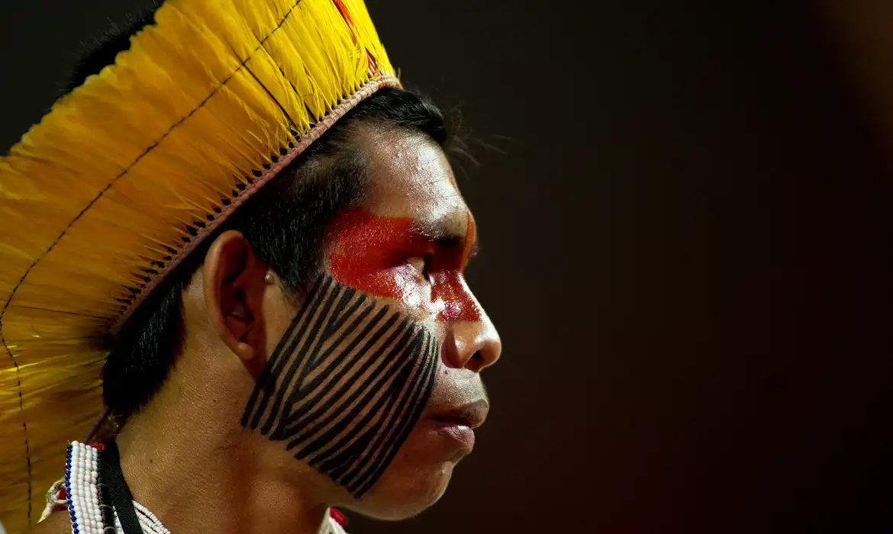
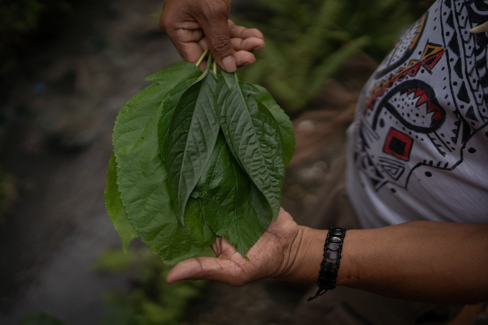
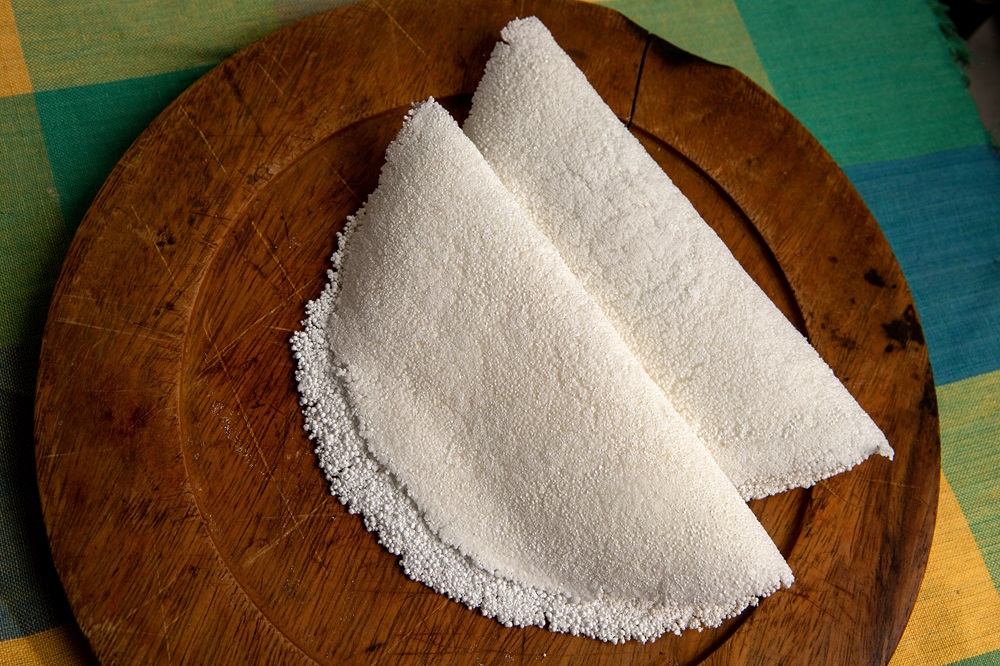

18 de junho de 2024
A conexão das culturas indígenas com a natureza é intrínseca e profunda, permeando todos os aspectos de suas vidas e tradições. Desde tempos imemoriais, esses povos desenvolveram uma visão holística do mundo, enxergando a natureza como um sistema interconectado no qual todos os seres vivos desempenham papéis essenciais. Essa cosmovisão está enraizada em uma compreensão de que os humanos são apenas uma pequena parte de um todo maior, e que todas as formas de vida merecem respeito e consideração
.Além disso, a relação das comunidades indígenas com a natureza é caracterizada por uma profunda sustentabilidade. Por meio de práticas ancestrais de subsistência, como agricultura tradicional, pesca artesanal e caça consciente, essas culturas aprenderam a viver em harmonia com o meio ambiente, respeitando seus ciclos naturais e garantindo a preservação dos recursos para as futuras gerações. Essa abordagem equilibrada e cuidadosa dos recursos naturais não apenas sustenta as comunidades indígenas, mas também desempenha um papel crucial na conservação da biodiversidade e na proteção dos ecossistemas locais.
A espiritualidade também desempenha um papel central na conexão das culturas indígenas com a natureza. Muitas tradições indígenas reverenciam a terra, os rios, as montanhas e os animais como sagrados, acreditando que eles são habitados por espíritos e divindades. Rituais e cerimônias são realizados para honrar e agradecer a natureza por seus dons, demonstrando uma profunda gratidão e reverência pelos elementos naturais que sustentam a vida. Essa dimensão espiritual fortalece ainda mais os laços das comunidades indígenas com o meio ambiente, promovendo um profundo respeito e cuidado pela terra e todos os seus habitantes.
18 de junho de 2024
A espiritualidade é um aspecto central e profundamente enraizado na cultura indígena, permeando todos os aspectos da vida dessas comunidades. Para muitos povos indígenas, a espiritualidade não é separada da vida cotidiana, mas é intrinsecamente ligada à relação com a natureza, a comunidade e o cosmos.
Na cosmovisão indígena, o mundo espiritual e o mundo material estão entrelaçados, com divindades, espíritos ancestrais e forças cósmicas influenciando e guiando a existência terrena. A terra é frequentemente considerada sagrada, vista como uma mãe que nutre e sustenta todas as formas de vida. Rios, montanhas, árvores e animais também são reverenciados como seres sagrados, cada um com sua própria essência espiritual.
Rituais e cerimônias desempenham um papel vital na expressão da espiritualidade indígena, servindo como meio de comunicação com o mundo espiritual, de celebração das dádivas da natureza e de fortalecimento dos laços comunitários. Essas práticas incluem danças, cantos, cerimônias de cura, ritos de passagem e celebrações sazonais, cada uma delas carregada de significado e simbolismo profundo.
Além disso, a espiritualidade indígena muitas vezes enfatiza valores como respeito, gratidão, equilíbrio e harmonia. Esses valores orientam as relações entre os seres humanos, com a natureza e com o divino, promovendo um modo de vida que busca a sustentabilidade, a justiça e a paz.
Em resumo, a espiritualidade é uma força vital nas culturas indígenas, oferecendo uma lente através da qual o mundo é compreendido e vivido, e orientando as ações e relações das comunidades indígenas com a natureza, uns com os outros e com o universo.
18 de junho de 2024
A sociedade indígena é caracterizada por uma forte coesão comunitária, baseada em laços familiares, valores culturais compartilhados e sistemas de apoio mútuo. Nas comunidades indígenas, a noção de indivíduo está frequentemente entrelaçada com a identidade coletiva, onde o bem-estar do grupo é priorizado sobre o indivíduo.
Os sistemas de parentesco desempenham um papel central na organização social, com relações familiares estendidas influenciando aspectos como herança, autoridade e obrigações mútuas. Essas redes de parentesco fornecem suporte emocional e material, garantindo que as necessidades individuais sejam atendidas dentro do contexto da comunidade.
Além disso, muitas sociedades indígenas possuem estruturas de liderança e governança que refletem valores democráticos e participativos. Os líderes comunitários são frequentemente selecionados com base em sua sabedoria, experiência e capacidade de servir ao bem comum, em vez de herança ou riqueza pessoal.
O compartilhamento e a reciprocidade são valores fundamentais nas sociedades indígenas, com recursos e conhecimentos frequentemente distribuídos de maneira equitativa entre os membros da comunidade. Essa prática fortalece os laços sociais e promove a solidariedade, garantindo que ninguém seja deixado para trás em momentos de necessidade.
Por fim, é importante destacar que as sociedades indígenas não são homogêneas e variam amplamente em sua organização social, dependendo de fatores como localização geográfica, contexto histórico e contato com culturas não indígenas. No entanto, em todas essas variações, a valorização da comunidade, da cooperação e do respeito mútuo permanece como um elemento central na vida social indígena.
18 de junho de 2024
A pintura corporal é uma forma de expressão cultural profundamente enraizada nas tradições de muitas sociedades indígenas ao redor do mundo. Essa prática ancestral desempenha papéis diversos, incluindo identificação étnica, expressão artística, ritual religioso, marcação de status social e comunicação simbólica.
Nas culturas indígenas, a pintura corporal muitas vezes é feita com pigmentos naturais, como argilas coloridas, sucos de plantas, cinzas e carvão, e é aplicada em padrões e desenhos que carregam significados específicos. Esses desenhos podem representar símbolos de identidade étnica, como padrões tribais ou animais sagrados, ou podem ser utilizados em rituais cerimoniais para marcar eventos importantes na vida da comunidade, como nascimentos, casamentos, iniciações e funerais.
Além disso, a pintura corporal desempenha um papel fundamental em rituais de guerra e danças tradicionais, onde os padrões e cores podem comunicar mensagens sobre bravura, pertencimento tribal e preparação espiritual para o conflito. Essa prática também é usada em celebrações festivas, como festivais sazonais e eventos comunitários, onde a pintura corporal é uma forma de celebrar a cultura e a identidade coletiva.
Em muitas culturas indígenas, a pintura corporal é mais do que uma simples decoração física; é uma manifestação tangível da conexão espiritual com a terra, os ancestrais e as forças cósmicas. Cada padrão e cor carrega consigo uma história e um significado profundo, transmitindo tradições antigas e fortalecendo os laços entre os membros da comunidade.
Hoje em dia, a pintura corporal continua a desempenhar um papel importante nas celebrações culturais e nas expressões artísticas das comunidades indígenas, preservando uma tradição ancestral e compartilhando a riqueza e a diversidade das culturas indígenas com o mundo.
18 de junho de 2024
A medicina indígena é um sistema de saúde tradicional praticado por muitas comunidades indígenas ao redor do mundo. Baseando-se em conhecimentos ancestrais transmitidos oralmente ao longo das gerações, essa forma de medicina abrange uma ampla gama de práticas e crenças que visam promover a saúde física, mental, emocional e espiritual dos indivíduos e da comunidade como um todo.
As práticas medicinais indígenas muitas vezes envolvem o uso de plantas medicinais, preparadas em forma de chás, pomadas, cataplasmas ou infusões, para tratar uma variedade de condições de saúde. Cada planta é selecionada com base em suas propriedades terapêuticas, que são conhecidas e passadas de geração para geração. Além das plantas, outras substâncias naturais, como minerais, argilas e resinas, também podem ser utilizadas para fins medicinais.
Além do uso de ervas e substâncias naturais, a medicina indígena frequentemente incorpora práticas de cura ritualísticas, que podem incluir cantos, danças, cerimônias de purificação, orações e rituais de proteção. Essas práticas visam não apenas tratar os sintomas físicos da doença, mas também restaurar o equilíbrio espiritual e energético do indivíduo e da comunidade.
É importante notar que a medicina indígena não se limita apenas ao tratamento de doenças físicas, mas também aborda aspectos emocionais, mentais e espirituais da saúde. Os curandeiros e xamãs indígenas são frequentemente vistos como líderes espirituais e guias na jornada de cura, utilizando seus conhecimentos e habilidades para restaurar o bem-estar holístico das pessoas e da comunidade.
Apesar dos desafios e pressões externas enfrentadas pelas comunidades indígenas, a medicina tradicional continua a desempenhar um papel vital na promoção da saúde e no fortalecimento da identidade cultural, transmitindo saberes e práticas que têm sustentado essas comunidades ao longo de séculos.
18 de junho de 2024
.jpg)
Os rituais desempenham um papel crucial nas culturas indígenas, servindo como meios de conexão espiritual, celebração, cura e transmissão de conhecimento ancestral. Esses rituais muitas vezes refletem a profunda ligação das comunidades indígenas com a natureza, os ciclos cósmicos e as forças espirituais que permeiam o mundo.
18 de junho de 2024
A culinária indígena é um reflexo da riqueza cultural e da diversidade dos povos originários ao redor do mundo. Cada tribo e comunidade indígena tem suas próprias tradições culinárias, baseadas em ingredientes locais e técnicas ancestrais de preparo de alimentos. Essas tradições frequentemente envolvem a utilização de ingredientes encontrados na natureza, como frutas, raízes, tubérculos, peixes, carnes de caça e vegetais selvagens, colhidos de forma sustentável e respeitando os ciclos naturais.
Um dos aspectos mais marcantes da culinária indígena é a relação de respeito e gratidão com a natureza. Muitos povos indígenas têm rituais e cerimônias que celebram a comida e agradecem aos espíritos da terra pela abundância proporcionada. Além disso, a preparação dos alimentos muitas vezes é um evento comunitário, onde homens, mulheres e crianças participam ativamente, fortalecendo os laços familiares e comunitários.
Os métodos de preparo dos alimentos na culinária indígena são variados e incluem técnicas como defumação, cozimento em folhas de bananeira, fermentação e secagem ao sol. Essas técnicas não apenas preservam os alimentos, mas também realçam seus sabores naturais, criando pratos únicos e deliciosos.
Apesar das adversidades enfrentadas ao longo da história, muitas tradições culinárias indígenas persistem até os dias de hoje, sendo transmitidas de geração em geração. No entanto, é importante reconhecer e valorizar essas tradições, garantindo o respeito pela cultura e pelos direitos dos povos indígenas, bem como a preservação do conhecimento tradicional sobre alimentos e técnicas de preparo.